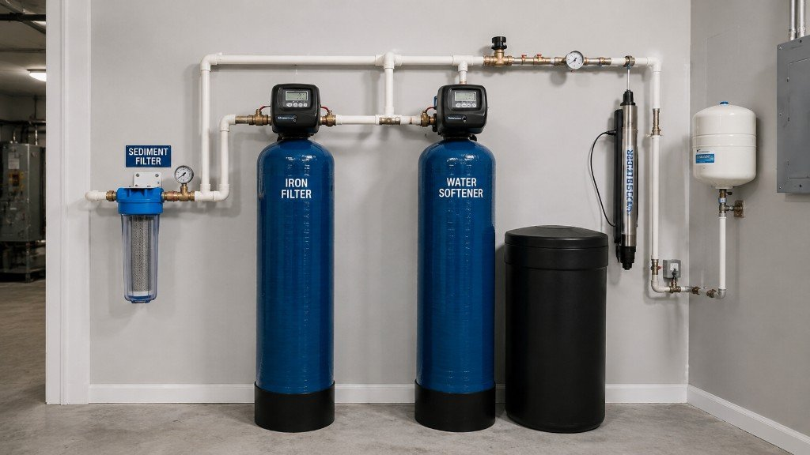
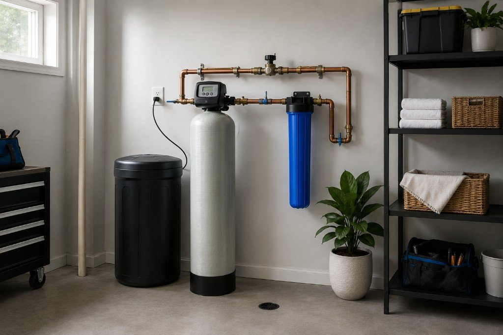

Reliable Well Water Treatment Systems in Baton Rouge, LA
Capital Water Co. installs well water treatment systems for Baton Rouge-area properties dealing with sediment, staining, odor, or mineral-related water concerns. Proper treatment helps improve everyday water quality for bathing, laundry, cooking, and appliance use, while giving homeowners a more consistent water experience from every tap throughout the house.

Built for daily performance
Choose Capital Water Co. for Reliable Well Water Treatment Systems in Baton Rouge, LA
- Thorough Water Treatment Planning: Capital Water Co. evaluates common well water concerns such as iron staining, sulfur odor, hardness, and sediment before recommending equipment. That detail-focused process helps avoid mismatched systems and supports better long-term performance for homes where water issues affect fixtures, laundry, and everyday cleaning routines.
- Smoother Service for Busy Households: Capital Water Co. helps simplify installation by coordinating treatment equipment around existing plumbing layouts, pressure tanks, and available utility space. For homeowners balancing work, school schedules, and property upkeep, that process-focused approach reduces disruption and makes system upgrades easier to manage from start to finish.
- Consistent Solutions for Different Property Types: Capital Water Co. installs well water treatment systems for rural homes, larger family properties, and houses with dedicated utility rooms or crawl space access. Whether a household relies heavily on outdoor washing, frequent laundry, or multiple bathrooms, Capital Water Co. focuses on dependable treatment matched to actual water use.
Protection for private wells
Why Reliable Well Water Treatment Systems in Baton Rouge, LA Matter for Everyday Water Quality
- Local Conditions Can Affect Private Wells: Groundwater conditions, mineral content, and naturally occurring contaminants can vary from property to property, making private well water less predictable than municipal supply. Around Baton Rouge, LA, that variation means treatment often needs to address specific issues such as sediment, discoloration, odor, or hardness based on the home’s source water.
- Untreated Water Can Impact Daily Living: When well water leaves orange stains, unpleasant smells, or scale buildup, ordinary tasks become more frustrating. Showers feel less comfortable, laundry may discolor, and dishes can dry with residue, so treatment becomes a practical upgrade for households that want cleaner water throughout the week.
- Move-In Readiness Matters for Rural Properties: Buyers and owners preparing a home for occupancy often want confidence that the water system is usable from the first day. Treating well water before full-time occupancy helps reduce surprises, supports cleaner fixtures, and makes kitchens, bathrooms, and laundry areas more ready for regular use.

FREQUENTLY ASKED ・ ANSWERS TO YOUR QUESTIONS
Frequently Asked Questions About Well Water Treatment Systems in Baton Rouge, LA
What should buyers check about Well Water Treatment Systems in Baton Rouge, LA before purchasing a home with a private well?
Homebuyers should review water test results, treatment equipment age, maintenance history, and any signs of staining, odor, or pressure issues before closing. Capital Water Co. can inspect existing treatment setups, explain visible concerns, and help buyers understand whether updates may be needed after purchase.
How long does installation of Well Water Treatment Systems in Baton Rouge, LA usually take for a single-family home?
Installation time depends on plumbing access, equipment type, and whether the setup includes multiple treatment stages, but many residential projects are completed within a day. Capital Water Co. evaluates utility space, connection points, and treatment goals so homeowners know what the installation process may involve.
Are Well Water Treatment Systems in Baton Rouge, LA different for properties with iron stains and sulfur smells?
Yes, treatment is often tailored to the specific water problem because iron, sulfur odor, hardness, and sediment usually require different equipment or combined treatment stages. Capital Water Co. reviews water conditions, discusses common symptom patterns, and recommends practical solutions based on how the property’s well water is actually being used.
SERVICE AREA
Find Us
Capital Water Co. provides well water treatment system installation across the Baton Rouge area for homes using private wells and dealing with staining, odor, hardness, or sediment. From established residential properties to rural edge locations, Capital Water Co. helps property owners improve household water quality with treatment solutions tailored to everyday plumbing demands and source-water conditions.